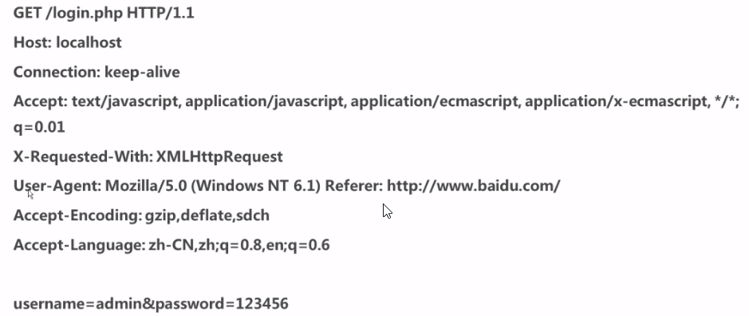
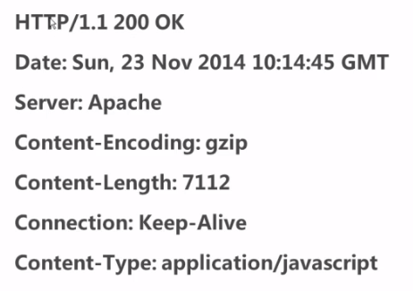
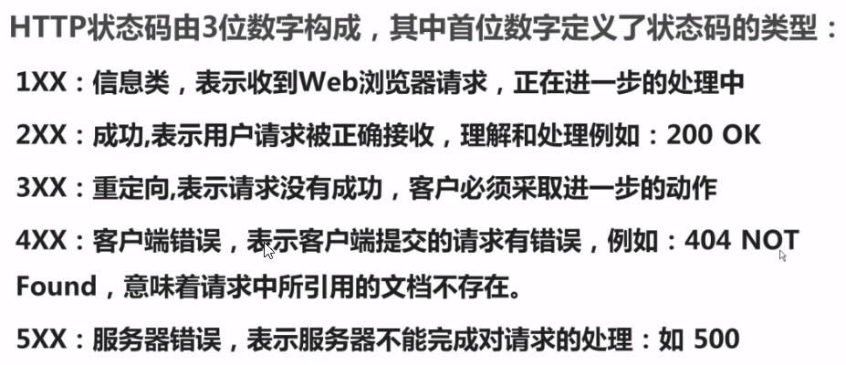
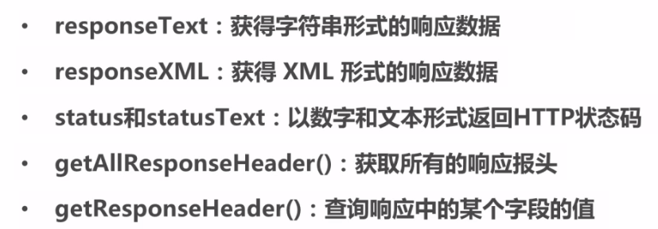
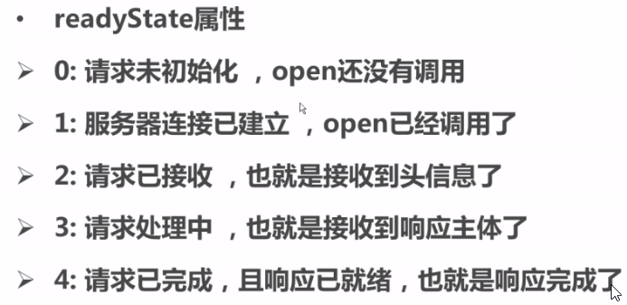
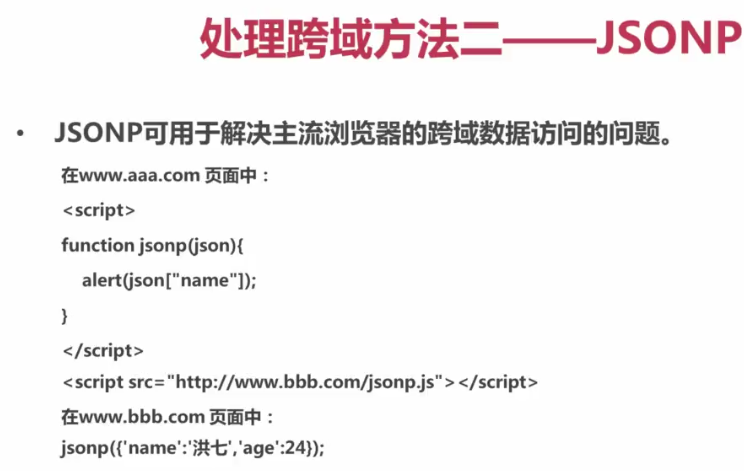
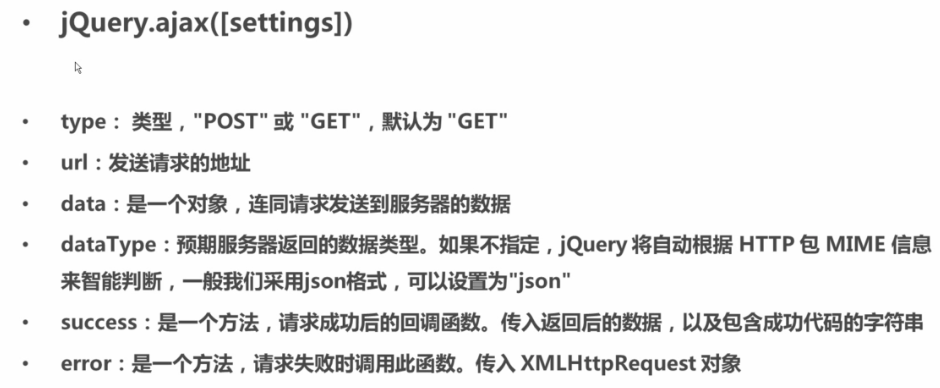

AJAX: Asynchronous JavaScript and XML 异步JavaScript和XML
AJAX技术是在不重新载入页面的情况下， 更新页面上的部分内容的异步通信技术。
AJAX是通过JavaScript的XMLHttpRequest对象实现的。
使用AJAX异步更新页面的一般过程是：
- 使用HTML+CSS实现页面，表达信息
- 运用XMLHttpRequest和web服务器进行数据的异步交换
- 运用JavaScript操作DOM，实现动态局部更新
IE浏览器是一个特殊的浏览器， 在创建XMLHttpRequest对象时，需要判断
var request;
if (window.XMLHttpRequest) {
request=new XMLHttpRequest();
}else {
request=new ActiveXObject("Microsoft.XMLHTTP");//IE6,IE5
}
HTTP
HTTP请求
一个完整的HTTP请求的过程， 通常有下面的7个步骤：
- 建立TCP连接
- Web浏览器向Web服务器发送请求命令
- Web浏览器发送请求头信息
- Web服务器应答
- Web服务器发送应答头信息
- Web服务器向浏览器发送数据
- Web服务器关闭TCP连接
一个HTTP请求一般由四部分组成：
- 请求的方法 GET还是POST
- 请求的URL
- 请求头：客户端信息和身份验证信息等
- 请求体：即请求正文，包含客户提交的查询字符串信息，表单信息等

Http请求方法 GET与POST的区别
| 请求方法 | |
|---|---|
| GET | 一般用于信息获取 使用URL传递参数 对所发生信息的数量也有限制，一般在2000个字符 |
| POST | 一般用于修改服务器上的资源 对所发送信息的数量无限制 |
HTTP响应
一个HTTP响应一般有三部分组成：
- 一个数字和文字组成的状态码，用于显示请求是否成功
- 响应头， 响应头和请求头一样包含许多有用的信息， 例如 服务器类型、日期时间、内容类型和长度等
- 响应体，也就是响应正文

响应的状态码有:

打开和发送请求
request.open("GET","get.php",true);
request.send();
request.open("POST","post.php",true);
request.send();
request.open("POST","create.php",true);
request.setRequestHeader("Content-type","application/x-www-form-urlencoded");
request.send("name=王二狗&sex=男");
获取内容

监听响应的状态
响应的状态有： 
监听的代码：
var request=new XMLHttpRequest();
request.open("GET","get.php",true);
request.send();
request.onreadystatechange=function(){
if (request.readyState===4&&request.status===200) {
// 做一些事情
// request.responseText
}
}
AJAX跨域
JSONP

代理
JQuery.ajax

$.ajax({
type: "POST",
url: "serverjson.php",
data: {
name: $("#staffName").val(),
number: $("#staffNumber").val(),
sex: $("#staffSex").val(),
job: $("#staffJob").val()
},
dataType: "json",
success: function(data){
if (data.success) {
$("#createResult").html(data.msg);
} else {
$("#createResult").html("出现错误：" + data.msg);
}
},
error: function(jqXHR){
alert("发生错误：" + jqXHR.status);
},
});
});